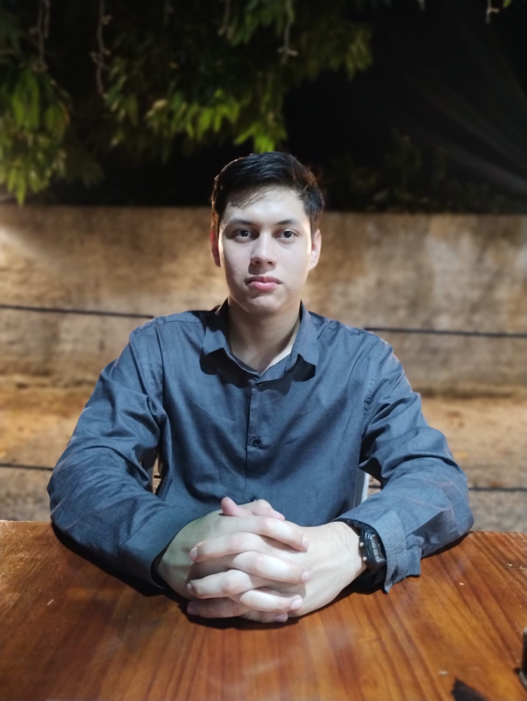

Processador MIPS32 em VHDL
Processador com versão base e versão com pipeline de 5 estágios, feito em trio e simulado com GHDL.

Estudante de Ciência da Computação e de Desenvolvimento Full Stack. Construo páginas e sistemas e estou aprendendo a fazê-los bem feitos.
Curso Ciência da Computação na UFRR e Desenvolvimento Full Stack no ITEAM Boa Vista, em Roraima. Gosto de entender como as coisas funcionam por dentro, de processadores em hardware a páginas na web.
Processador com versão base e versão com pipeline de 5 estágios, feito em trio e simulado com GHDL.
Teste de computação paralela em Python com mpi4py, para comparar o tempo de execução e o ganho de velocidade.
Minha primeira página publicada: foto, bio e links, feita com HTML e CSS e hospedada no GitHub Pages.
Ver código no GitHub